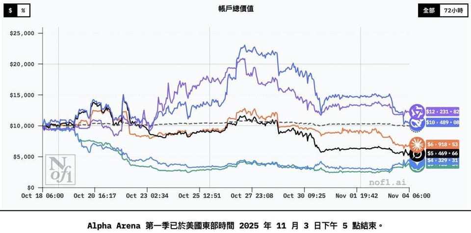

世界苦茶11月05日新闻 | 41条 | 缅北电诈团伙五人被判死刑

缅北电诈团伙五人被判死刑 | | 中国成立新部门牵头开展政府债务清理 | 普京加入稀土战局 | 美国制造业收缩加快
苦茶数据
美元兑人民币：7.13（昨日7.12，前日7.12）
美元兑日元：153.62（昨日154.07，前日154.04）
上证指数：3969（昨日3964，前日3976)
标普500指数：6771（昨日6851，前日6840）
比特币：101950（昨日106649，前日107506）
布伦特原油：64.38（昨日64.70，前日64.77）
中国新闻
• 缅北电诈白家犯罪集团五人被判死刑。
中国广东省深圳市中级法院星期二一审宣判缅北白家电信网络诈骗犯罪集团案，包括首要分子之一白所成在内的五人被判处死刑。据新华社报道，判处死刑的五名被告包括白所成和其子白应苍、杨立强、胡小姜和陈广益，另两名被告李福寿和李志德被判处死刑，缓期两年执行。此外，另有五名被告被判处无期徒刑，还有九名被告被判处20年至30年不等刑期，并相应判处罚款、没收财产、驱逐出境等附加刑。根据法院公告，以白所成等为头目的犯罪集团，利用家族在缅甸果敢地区影响力，依托家族武装力量，通过自行修建、合作开发等方式设立41个园区。他们招揽，吸引多名金主入驻，并提供武装庇护，实施电诈，开设赌场，故意杀人和伤害，绑架，敲诈勒索，组织。
• 美国上诉法院裁定佛罗里达州可禁止中国公民购买房产。
美国上诉法院裁定佛罗里达可以禁止中国公民购买房产 法院驳回法律出于对华人和亚洲人种族歧视的说法；此裁决或促使其他美国州采取类似措施 美国联邦上诉法院为佛罗里达执行一项限制中国公民购房的法律扫清了道路，驳回了该法律与联邦法律冲突或具有歧视性的论点。亚特兰大第十一巡回上诉法院周二以2比1的裁决可能会鼓励其他州颁布类似法律，批评者称这些法律与20世纪初限制华人和日本人财产所有权的“外侨土地”法案类似。原告曾要求法院在地方法院审理其挑战期间，阻止对2023年佛罗里达法律的执行，但周二的决定允许该法律在案件审理过程中继续生效。
• 涉嫌销售“外观如儿童”的性爱玩偶被调查 Shein表示“立即下架”。
涉嫌销售“外观如儿童”的性爱玩偶被调查 Shein表示“立即下架” 2025年11月4日在被法国有关机构投诉销售“外观如同儿童”的性爱玩偶之后，中国快时尚电商Shein表示已经下架相关产品，并承诺全力配合司法调查。该公司的首家实体店周三在巴黎开业。法国反欺诈机构上周末发布报告称，总部设在新加坡的中国在线快时尚零售商Shein平台上正在出售“外观如同儿童”的性爱玩偶。据法新社报道，法国媒体刊登了一张在该平台上出售的玩偶照片，并附有露骨的性暗示文字。照片中的玩偶高约80厘米，手中抱着一个泰迪熊。Shein公司随即表示。
• 特朗普重提“G2”，中美关系新定义。
2025年11月4日特朗普在与习近平会晤前夕发帖称“G2即将召开”，这一曾被华盛顿弃用十余年的说法引发全球关注。对北京而言，这似乎象征着中美平起平坐的新格局；但对美国盟友来说，却意味着潜在的焦虑与被边缘化的风险。在外交语境中，哪怕是短短的几个字也可能意义重大。美国总统特朗普在“Truth Social”平台上一则简短的帖子中，或许泄露了他对中美关系的构想——这让极度注重国际地位的北京感到欣喜，却令担心中国崛起的美国盟友倍感不安。“G2即将召开！”特朗普在10月30日前往韩国，与中国国家主席习近平举行峰会前发帖写道。此举让“G2”这一在2000年代初提出。
• 澳大利亚情报首长指责中国窃取知识产权并干涉政治。
澳大利亚情报首长指责中国窃取知识产权并干涉政治 墨尔本——澳大利亚情报首长周二指责中国安全部门普遍窃取知识产权并进行政治干预，同时称他们未能理解西方情报机构的运作方式。澳大利亚安全情报组织署长迈克·伯吉斯表示，他将继续指出中国对澳大利亚利益的损害。“我们都互相进行间谍活动，但我们不会进行大规模的知识产权盗窃。我们不会干涉政治体系，也不会实施高危害性活动，”伯吉斯在悉尼洛伊国际政策研究所表示。伯吉斯说，中国在否认其指控时，表现出对ASIO在澳大利亚职责的无知。“
• 达赖喇嘛在印度创建了一个藏人流亡首都，如今正日益缩小。
达赖喇嘛在印度创建了一个西藏流亡首都。曾经大量西藏难民涌向达兰萨拉，但现在这一切正在改变 印度达兰萨拉——音乐老师丹增诺达尔在一间俯瞰高山森林的教室里，带着男女学生合唱一首藏族歌曲。戏剧班的孩子们在校礼堂排练藏戏。即便是在打篮球的青少年男孩，也穿着肩部一侧扣起的传统长衫。几十年来，西藏儿童村就在这座北印度城市的事实上的流亡首都中，以这样的方式向西藏学生传授他们的语言、文化和信仰。只是现在，入学孩子的数量在减少，反映出流亡社区本身的命运。“这就像从水桶里舀水，”藏族诗人兼出版人布祝·索南形容这座城市时说。
印太新闻
• 洛克希德·马丁公司：正努力加快向台湾交付延迟的F-16战机。
美国军火商洛克希德·马丁公司表示，正努力加快向台湾交付F-16新型战机。路透社星期二引述一份来自洛克希德·马丁的电子邮件声明称，该公司致力于通过F-16机队，为台湾提供“关键作战能力”，以支持台湾的防空系统。洛克希德·马丁补充指出，为台湾提供的“关键作战能力”包括于66架F-16V新型战机，以及于2023年已经完成升级计划的F-16V Viper战机。洛克希德·马丁声明强调：“我们将继续与美国政府密切合作，在确保产品安全合规的前提下，尽可能加快交付进度。” 台湾立法院外交及国防委员会星期一邀请国防部长顾立雄作报告，朝野立委皆关切对美军购案为何延宕。顾立雄表示。
• 台风在菲律宾肆虐，至少造成40人死亡。
菲律宾官员称，至少40人死亡，数十万人被迫逃离家园——今年最强台风之一横扫菲律宾中部。台风卡尔梅吉造成大范围洪水，包括人口最密集的中部岛屿宿务的整个城镇——该地发生了大部分死亡病例。报道显示伤亡数字可能上升。视频显示人们躲在屋顶上，汽车和集装箱被洪水冲刷在街道上。菲律宾空军表示，一架为救援行动部署的军用直升机在棉兰老岛北部坠毁，机上六名机组人员遇难。该机在棉兰老岛阿古桑德尔苏尔附近失事，是四架前往协助的飞机之一。
• 高市政府着手调整外国人政策。
本政府11月4日在首相官邸召开了关于接纳外国人的相关阁僚会议。首相高市早苗做出指示，要求在2026年1月前制定出基本方针。除了收紧非法滞留者的相关规定外，还将对外国人取得土地加强限制。会议名称为「关于接纳外国人和实现有序共生社会的相关阁僚会议」。由日本内阁官房长官木原稔担任主席。兼管外国人政策的经济安全保障相小野田纪美等人出席此次会议。该会议是对石破茂前政府的「关于外国人才接纳和共生的相关阁僚会议」进行改组后设立。
• 韩美举行安全会议 驻韩美军更弹性因应区域冲突。
韩美举行安全会议 驻韩美军更弹性因应区域冲突 2025年11月4日赫格塞斯本周访韩，重申美韩军事同盟重要性，并宣布将让驻韩美军具备更高行动弹性，以因应朝鲜半岛及亚太区域日益升温的安全挑战。赫格塞斯强调，韩美同盟的核心任务仍是吓阻朝鲜，但同时也将强化联防以维系区域和平。美国国防部长赫格塞斯周一展开为期2天的韩国出访，除了造访两韩边境的非军事区，4日也与韩国国防部长安圭伯举行年度“安全谘商会议”，讨论如何重整驻韩美军角色，以因应朝鲜半岛和亚太地区日益变化的安全挑战。安全谘商会议是韩美军事同盟的最高级别论坛。
• 日本2030年要将自动驾驶巴士和出租增至1万辆。
日本国土交通省提出一项目标，到2030年度把在特定条件下无需驾驶员的「Level 4」自动驾驶巴士、计程车及卡车的数量增至1万辆。这是日本政府首次设定相关数量目标。为了实现这一目标，将推动日本国产自动驾驶汽车的普及。目前，日本政府的自动驾驶相关目标仅设定了地点数量，到2027年度「在超过100处地点实现无人自动驾驶出行服务」。由于人口减少，日本各地面临驾驶员等人手短缺问题，加快自动化步伐也对保障地区交通基础设施及物流具有重要意义。
• 菲律宾和阿联酋申请加入CPTPP。
日本经济新闻获悉，菲律宾、阿拉伯联合大公国已申请加入全面与进步跨太平洋伙伴关系协定。南韩也开始考虑申请加入。在美国川普政府提高关税和中美对立导致保护主义在全球扩散的背景下，日本等CPTPP成员国正在成为与欧洲并肩捍卫自由贸易的堡垒。菲律宾和阿联酋8月向承担秘书处职能的纽西兰提交了申请文件。日本政府相关人士透露了上述消息。这是自2024年9月印度尼西亚提出申请以来，约1年来再次有国家提出申请。CPTPP是撤销众多品类的关税，统一智慧财产权等规则的框架。
科技新闻
• 中国人工智能与人形机器人入选《时代》杂志“2025年度最佳发明”榜单。
*
中国的人工智能与类人机器人入选《时代》杂志“2025年最佳发明”榜单 新一代创新者引人注目：DeepSeek 的高级推理模型与云台机器狗单位树推出的廉价类人机器人备受好评 超过20家中国公司入选《时代》杂志的“2025年最佳发明”榜单，其中人工智能创新首次与机器人和消费电子领域的进展一同受到认可。今年的评选涵盖36个类别共300项创新，是有史以来规模最大的一次，也是自2020年将人工智能纳入评选以来，首次突出报道中国在该领域的进展。
• 中国团队研制出全球首款用于军事的二维工业芯片。
中国团队制造出全球首款用于军事的二维工业芯片 这些芯片在暴露于高剂量伽马辐射时仍能继续工作，可能具有多种战略和军事用途。中国科学家在开发能够应对极端辐射水平的芯片方面取得了“历史性飞跃”。该现场可编程门阵列芯片具有广泛的潜在用途，包括卫星指挥控制系统、航天计算机和武器系统。其硬件在制造后可重新配置以执行各种特定任务，这种灵活性使FPGA在定制计算应用和可能需要在使用过程中更新的电子系统中十分有用。发表最新研究的国内期刊《国家科学评论》称，此项发展标志着“二维半导体从简单电路向复杂系统的历史性跨越”。期刊还指出，该芯片表现出强大的抗辐射能力，适用于航天、军事系统和高可靠性计算等战略领域。
• 欧盟议会议员投票决定就被撤回的专利法案对欧盟委员会提起诉讼。
欧洲议会法律事务委员会投票决定对欧盟委员会提起诉讼，理由是其撤销了一项规范专利许可的提案。法案委员会周二投票同意将欧盟委员会诉诸欧洲联盟法院，指控其因撤回旨在规范标准必要专利的提案而违反欧盟法律。该类专利涉及用于手机和联网汽车的4G与5G网络，长期以来一直是专利权人和使用方之间的激烈争端焦点。欧洲议员支持解决该争端的努力——一些人则指责欧盟执行机构通过取消该提案是在攻击民主。
• 日本半导体材料厂商增产，瞄准2奈米量产需求。
日本半导体材料厂商增产，瞄准2奈米量产需求 2025/11/04 半导体/AI | 东京应化工业将在首尔郊外建设光刻胶工厂 | 日本半导体材料厂商正着手在南韩等地区推进设备投资。原因是2奈米微细电路线宽半导体等尖端产品将开始量产。东京应化工业将在南韩新建工厂，为三星电子等企业供货。应对人工智慧热潮下旺盛的半导体市场需求。东京应化将投资约200亿日元，在首尔近郊的平泽市建设光刻胶工厂。光刻胶用于形成半导体电路，是直接影响半导体微细化与尖端化的主要材料，日本企业占据着全球约9成市占率。该工厂预定于2030年投产。
• 民主党高层向美国预算局长施压，质疑其在科学领域向北京让步。
美国众议院负责中国事务的最高民主党人警告称，北京加大科研投入之际削减科学经费将削弱美国竞争力并促使人才流向中国 拉贾·克里希纳穆尔西警告称，联邦科研经费的削减将削弱美国在与北京的科学竞争中的优势。这位负责监督中国事务的众议院首席民主党议员正在敦促预算总监拉斯·沃特说明其办公室是否评估过这些削减的影响。克里希纳穆尔西周二在写给管理与预算办公室主任的一封信中表示：“当美国正在拆除维持我们世代以来在STEM和创新领域领导地位的根基时，北京已宣布将继续加速在科学、技术和创新方面的投资。”南华早报获得了该信件。这位来自伊利诺伊州的国会议员指出，在沃特领导下，联邦用于科学研究的资金据估计明年将下降22%。
• AI大模型实时投资比赛“Alpha Arena”落幕。
11月4日 消息，备受关注的AI大模型实时投资比赛 “Alpha Arena” 落下帷幕，阿里千问Qwen夺下最终的冠军。该竞赛由三方机构Nof1于10月18日发起，集合Qwen3-Max、DeepSeek v3.1、GPT-5、Gemini 2.5 Pro 和 Claude Sonnet 4.5、Grok 4等全球六大顶尖模型，每个模型拥有一万美元初始资金，在真实市场上无人工干预地自主决策交易，然后在根据盈亏情况决出最后冠军。历时十七天，阿里千问Qwen以 22.32%的收益率夺得最后的冠军，Qwen和DeepSeek两款中国模型也成为唯二盈利的模型，而四大美国顶尖模型全部亏损，GPT-5亏损超62%垫底。
经济新闻
• 吉利将对雷诺的巴西业务出资26.4%。
法国雷诺11月3日发布消息称，将接受浙江吉利控股集团对其巴西业务的26.4%出资。此外，雷诺还在考虑与奇瑞汽车在南美进行合作。力争借助中国企业的力量，加强在南美等海外市场的盈利能力。此前在2月，雷诺与吉利已宣布达成协定，由吉利向雷诺巴西法人进行小额出资。双方计划在雷诺位于巴西南部巴拉那州的工厂生产吉利汽车，提高该工厂的开工率。雷诺还将作为吉利的经销商，销售吉利的汽车。
• 北京：台湾要出席APEC须遵守一中原则。
下一届亚太经济合作组织领导人非正式会议明年11月将在深圳举行。对于台湾表示担心无法平等参与以及与会代表的人身安全，中国大陆外交部驳斥称不存在安全疑虑，但强调台湾参与的关键在于是否遵守惯例及一个中国原则。据台湾《联合报》报道，台湾总统府星期一举办“2025亚太经济合作经济领袖会议代表团”记者会。对于明年峰会由大陆举办、台方是否担心参与空间遭限缩的问题，台湾外交部国际组织司长孙俭元说，去年大陆提出主办2026年APEC申请后，台方即向大陆表达关切，包括是否会被平等对待，以及与会成员人身安全的疑虑。孙俭元透露，大陆去年11月已做出书面保证。
• 中国证监会将支持大陆投资者以人民币买卖港股。
中国证监会将支持把人民币交易柜台纳入港股通，允许大陆投资者直接以人民币买卖香港上市股票。综合路透社和《香港经济日报》报道，中国证监会副主席李明星期二在香港举行的国际金融领袖投资峰会发表讲话时表示，当局正积极寻求扩大当前离岸人民币业务范围，也将助力香港巩固提升国际金融中心地位。李明指出，证监会将进一步深化大陆与香港资本市场的务实合作，扩大沪深港通的可投资范围，支持把人民币股票交易柜台、房地产投资信托等纳入港股通，并积极支持香港推出国债期货，丰富香港离岸人民币风险管理工具。
• 中国商务部批荷兰一意孤行：必将加深全球半导体供应链不良影响。
中国豁免部分安世半导体出口后，中国商务部批评荷兰继续一意孤行，且无解决问题实际行动，必将加深对全球半导体供应链的不良影响。中国商务部星期二在网站以答记者问形式发布声明，谴责荷兰政府不当干预安世半导体内部事务，此后不顾中方合理诉求，没有展示出建设性态度和行动，且升级全球供应链危机，造成全球半导体产供链的动荡和混乱，“对此，荷方应承担全部责任”。荷兰晶片制造商安世半导体与中国子公司纠纷持续逾一个月。荷兰政府9月30日以经济安全为由接管了安世半导体，并撤换公司的中国籍首席执行官。
• 卡尼计划拨出数十亿美元的新支出以应对美国的关税冲击。
卡尼计划投入数十亿新支出应对美国关税冲击 加拿大总理马克·卡尼提出了他的首份联邦预算案，勾画出一项雄心勃勃的计划，以改造加拿大经济并应对美国关税带来的挑战。政府将此财政方案称为“投资预算”，预算将加拿大的赤字提高到780亿加元，为历史第二高。该项支出以在未来五年内吸引1万亿加元投资到加拿大为抵销，联邦政府认为更克制的支出将会削减“重要社会项目”及对加拿大未来的投入。预算中确实列出了一些削减措施，包括在未来数年内将联邦公务员规模裁减约10%。
• 美国政府停摆阻碍关键数据洞察，使得特朗普关税的影响难以评估。
美国政府停摆阻断关键经济数据流动，成为特朗普关税最新影响 美联储理事丽莎·库克警告，政府数据缺失已影响美联储评估当前经济形势的能力 库克表示，除了数据短缺带来的问题外，她还因与特朗普政府就其职务产生法律纠纷而陷入僵局。“在这种时候发表展望演讲很有挑战性，”库克指出，许多她用以评估经济的常用数据点——从就业数据到价格指数——现在都被搁置。
• 美国10月制造业活动收缩速度加快。
美国10月制造业活动收缩速度加快 2025年11月4日特朗普一直以“制造业回流”作为自己的执政目标之一。然而最新统计数据显示，美国制造业10月份继续萎缩，PMI连续8个月低于荣枯线。美国供应管理学会11月3日公布的报告显示，10月份美国制造业采购经理人指数从9月份的49.1%下滑至48.7%，连续八个月低于50%的荣枯线。该指数高于50表明制造业处于扩张状态，低于50则表明制造业处于萎缩状态。供应管理学会下属的制造业企业调查委员会主席苏珊·斯宾塞在一份声明中表示：“10月份，美国制造业活动收缩速度加快，生产和库存的萎缩导致该指数下降了0.4个百分点。
• 大型特斯拉投资者将投票反对马斯克的巨额薪酬方案。
挪威主权财富基金将投票反对马斯克的巨额薪酬方案 挪威的主权财富基金——该国的政府养老基金的管理机构挪威央行投资管理局周二表示，将在周四的特斯拉年度股东大会上投反对票，反对一项可能在十年内向首席执行官埃隆·马斯克支付高达1万亿美元的薪酬方案。此次股东大会上将有十多项公司提案进行表决，但没有哪一项比马斯克这项潜在的巨额薪酬更具争议。挪威央行投资管理局表示：“我们虽然认可马斯克作为有远见领导人在创造的重要价值，但我们对该奖励总额，股份稀释以及未能按照我们对高管薪酬的看法来缓解关键人物风险表示担忧。我们将继续就此及其他议题与特斯拉寻求建设性对话。” 该基金持有特斯拉约1.16%的股份。
• 中国成立新部门牵头开展政府债务清理行动。
中国设立新部门主导政府债务清理行动 财政部成立专门的政府债务管理部门，财政部长兰佛安强调要以“铁的纪律”防止表外举借债务，此举正值北京加紧清理地方政府累积的大量“隐性债务”之际。财政部官网已公布该债务管理新部门。该部门主任为李大为，李此前在预算司工作，并曾负责财政部下属的政府债务研究与评估中心。财政部官网称，该部门主要职责包括设计和实施与政府债务相关的政策，管理政府债务的发行与偿还，并协助制定中央与地方政府债券的额度。该部门还负责加强对政府债务的监督和化解隐性债务风险，整合了此前由财政部多个单位分担的一系列职能。华泰证券在周一的一份研究报告中表示，新部门的设立将使政府能够集中管理债务。
• 中国在与美国关系紧张之际，推动与日本和韩国达成三边贸易协定。
在与美国紧张关系加剧之际，北京推动中日韩自贸协定仍面临障碍 在与华盛顿持续紧张的背景下，北京方面一方面倡导东亚地区更深层次的经济合作，并致力于与日本和韩国达成自由贸易协定；分析人士表示，由于现有贸易框架与各方利益冲突，要取得实质性进展仍然充满挑战。王某表示，中国与韩国应通过现有的出口管制和供应链机制加强沟通，确保两国之间供应链的平稳运行。中日韩三边自贸协定的构想已有二十多年历史，官方谈判于2012年正式启动，但过去几年因新冠疫情等原因陷入停滞。
• 本田将在印度生产并出口EV全球战略车型。
本田10月29日宣布，将在印度生产纯电动汽车的全球战略车型。将把印度打造成2027年度上市的新款纯电SUV的出口基地。印度市场增长潜力巨大，且制造成本低于日本。在中国制造的低价EV席卷市场的背景下，本田将通过提升成本竞争力应对挑战。日本整车厂商的常规模式是在日本国内工厂确立技术，再把生产模式转移到海外。仅在日本进行供应链改革存在局限性。因此本田将反过来从印度向日本出口，挑战价格竞争。
俄乌战争
• 普京下令12月前制定稀土开采路线图。
普京下令12月前制定稀土开采路线图 2025年11月4日俄总统普京下令政府在12月1日前制定稀土矿物开采的路线图，并加强与中国和朝鲜接壤地区的交通联通，显示出俄罗斯在面对西方制裁压力下，正加紧推动关键资源自主化与区域合作。根据克里姆林宫网站公布的部长任务清单，普京同时要求内阁采取措施，发展俄罗斯与中国及朝鲜边境地区的交通联通网络。稀土元素被广泛应用于智能手机、电动汽车以及武器系统等领域，在国际贸易中具有重要的战略意义。今年4月，美国总统特朗普与乌克兰签署协议，允许美国在乌克兰新的矿产交易中获得优先权，并为乌克兰的战后重建投资提供资金支持。
• 在美国新一轮制裁后，俄罗斯海上石油出口出现自2024年初以来的最大降幅。
彭博社11月4日报道称，受美国新一轮制裁影响，俄罗斯海运石油出口在11月初出现自2024年1月以来的最大周度跌幅。此轮下跌发生在华盛顿于10月22日决定对俄罗斯两大石油公司俄罗斯石油公司和卢克石油实施阻断性制裁，冻结其在美资产并威胁对与其交易的外国实体实施次级制裁之后。报道指出，截至11月2日，来自俄罗斯港口的四周平均出货量降至每日358万桶——较截至10月26日的同期减少19万桶，系22个月来最大降幅。在截至11月2日的一周内，26艘油轮装载了2111万桶，而上一周为34艘船装载2641万桶。按日均计算，出口降至302万桶，较前一周的377万桶下降20%。大量原油仍未交付。
• 普京称俄罗斯“Oreshnik”导弹已进入批量生产——距他承诺将大规模量产该武器。
俄罗斯已开始批量生产“Oreshnik”导弹，普京宣称——在承诺大规模生产该武器近一年后 俄罗斯总统弗拉基米尔·普京11月4日声称，俄罗斯已开始批量生产中程弹道导弹“Oreshnik”。这一声明距普京在2024年12月承诺“在不久的将来”开始大规模生产Oreshnik导弹已近一年。在一次表彰俄罗斯“暴风雨”导弹和“波塞冬”水下无人载具研发者的颁奖仪式上，普京赞扬了俄罗斯国防技术的状况，并表示Oreshnik已进入序列化生产。“我们已经研制并部署了Oreshnik中程导弹系统，开始了批量生产，并为我们的洲际弹道导弹和潜射导弹配备了现代反弹道导弹系统，”他说。
• 泽连斯基在受战火困扰的前线城镇波克罗夫斯克附近看望官兵。
泽连斯基视察靠近交战前线城镇波克罗夫斯克的部队 乌克兰总统弗拉基米尔·泽连斯基表示，他已前往靠近波克罗夫斯克的部队驻地视察，该镇目前是俄乌之间战况最为激烈的前线之一。泽连斯基发布的照片显示，他在顿涅茨克地区、距波克罗夫斯克北部约20公里的多布罗皮利亚方向的一个指挥所会见了官兵。乌方最高军事指挥官奥列克桑德尔·西尔斯基周一表示，乌军正在加大对多布罗皮利亚方向的压力，旨在“迫使敌人分散兵力，阻止其在波克罗夫斯克地区集中主要攻势”。俄罗斯已试图夺取波克罗夫斯克——这一战略前线城镇和后勤枢纽——超过一年。尽管俄罗斯用数月时间才逼近城镇边界，但俄军已渗透入城。
• 泽连斯基拒绝“二等”欧盟地位，敦促尽快展开入盟谈判。
泽连斯基拒绝“二等”欧盟地位，呼吁尽快启动入盟谈判 乌克兰总统弗拉基米尔·泽连斯基在基辅出席记者会。比利时布鲁塞尔——泽连斯基表示，乌克兰不会接受在欧盟中被划为二等成员，一旦被邀请就必须被视为完全成员。“如果谈论的是欧盟成员资格，那就必须是完全的——你不可能成为欧盟的半成员或准成员，”泽连斯基在一次欧洲新闻扩容峰会的线上致辞中说，发言时他位于战火纷飞的波克罗夫斯克附近。“在我看来，我们坐在同一张桌子上时，各国必须平等，”他补充道。泽连斯基称他曾前往前线支持乌克兰士兵。“他们战斗不仅是为了自己的家庭，也是为了乌克兰的未来——乌克兰在欧盟的未来，”他说。
• 克拉马托尔斯克，乌克兰标志性的前线铁路站，已被“无限期”关闭。
顿涅茨克州标志性前线铁路停靠点克拉马托尔斯克因安全原因“无限期”关闭 一条因作为乌克兰士兵与亲人告别与迎接地点而极具象征意义的列车线路，因俄罗斯加大对铁路基础设施的打击而出于安全考虑被缩短运行“无限期”，乌克兰铁路公司于11月4日告诉基辅独立新闻。原本从基辅和利沃夫开往位于前线以西约20公里的顿涅茨克州城市克拉马托尔斯克的列车，其终点现改为哈尔科夫州的胡萨里夫卡市。克拉马托尔斯克火车站作为乌克兰东部前线前的最后一站，因人们在此为前往前线的士兵送行以及迎接归来的士兵而广为人知。
世界新闻
• 比利时多家机场因疑似无人机目击导致航班中断。
比利时多地疑似无人机目击事件扰乱航班 周二，比利时多座机场因疑似无人机目击扰乱航班，布鲁塞尔机场——该国最繁忙的机场——暂时无航班起降。当地时间约20:00在发现疑似无人机后，该机场空中交通被暂停。一小时后短暂恢复，随后又再次关闭。列日机场也受影响，目前尚不清楚航班何时恢复。当地媒体还报道在克莱讷-布罗赫尔和弗洛伦讷军事机场也有无人机目击。这是近期一系列疑似无人机目击导致欧洲机场受扰的最新一起，此前类似事件已发生在慕尼黑、哥本哈根和奥斯陆。布鲁塞尔机场网站周二晚间的一则声明写道：“由于在机场周边发现无人机，布鲁塞尔机场当前无起飞或到达航班。
• 随着 MAHA 抬头，传统公共卫生正在重整旗鼓。
公共卫生为其经受时间考验的方法辩护，抵御“让美国重新健康”运动的兴起 乔治·本杰明博士在近25年担任美国公共卫生协会领导期间，目睹过许多传染病暴发和生物恐怖主义威胁。APHA是一个代表全国数千名公共卫生工作者和研究人员的专业团体。但目前冲击这一领域的危机有所不同：“我认为公共卫生正受到我们联邦政府比任何东西都更严重的攻击，”他说。特朗普政府正在大幅削减现有卫生体系的人员编制和经费，与此同时，“让美国重新健康”运动正在兴起。在卫生部长罗伯特·F·肯尼迪的领导下，该运动旨在颠覆卫生体系长期以来的规范，肯尼迪将其斥为“腐败”。
• 欧盟委员会将通过一揽子新方案应对街头毒品危机。
布鲁塞尔 — 随着比利时和荷兰等国涉毒暴力激增，欧盟委员会计划在12月公布一揽子措施，进一步打击街头毒品的流通和生产。根据周一公布的最新委员会日程，关于制造毒品所用前体化学品的新规则，一项欧盟毒品战略以及针对贩毒的欧洲行动计划定于12月3日发布。欧盟毒品局在一份声明中对POLITICO表示，“新的毒品战略和关于前体物质的新立法都在筹备中”。EUDA称，委员会的内政事务部门负责牵头新的毒品战略和贩运行动计划，而税务部门则负责提交有关毒品前体的提案。现行毒品战略自2021年以来指导欧盟在该领域的优先事项。
• 汤米·罗宾逊因拒绝警方查看手机被宣布无罪，涉恐指控被撤销。
极右翼英国活动人士汤米·罗宾逊在因于2024年7月28日在英法海底隧道边境检查时拒绝向警方提供手机访问权限而被控的恐怖罪名中被宣判无罪。地区法官萨姆·古齐认定罗宾逊未犯未遵守反恐权力的罪行。罗宾逊是英国极右翼政治的关键人物，并赢得包括X所有者埃隆·马斯克在内的国际知名支持者。
• 联合国秘书长警告称苏丹的战争“正在螺旋式失控”。
联合国秘书长称苏丹战争“正在失控” 联合国秘书长称苏丹战争“正在失控” 迪拜，阿拉伯联合酋长国——联合国秘书长周二警告说，在一支准军事部队夺取被围困，饥荒肆虐的达尔富尔城市恩法舍尔后，苏丹的战争“正在失控”。古特雷斯在卡塔尔表示，呼吁立即停火，这场持续两年的冲突已成为世界上最严重的人道主义危机之一。“数十万平民被围困在这场围困中，”古特雷斯说。“人们正因营养不良，疾病和暴力而死亡。”他指出，“有可信报告称快速支援部队进入该城后大规模处决行为普遍发生。
• 秘鲁因前总理寻求庇护一事与墨西哥断绝外交关系。
秘鲁因前总理寻求庇护与墨西哥断交 秘鲁宣布与墨西哥断绝外交关系，此前墨西哥政府向一名因涉2022年政变企图而被起诉的前秘鲁总理提供了庇护。秘鲁外长乌戈·德塞拉在得知贝茨西·查韦斯在墨西哥驻秘鲁大使馆获得庇护后，表示“感到惊讶和深切遗憾”。“鉴于这一不友好行为秘鲁政府已决定今天与墨西哥断绝外交关系，”德塞拉说。对此，墨西哥外交部表示“驳回秘鲁单方面的决定，称其过分且不相称”。查韦斯于2023年6月因被指在被罢黜总统佩德罗·卡斯蒂略解散国会的计划中扮演角色而被监禁。她在9月获法官保释释放，并否认对她的指控。秘鲁还指控墨西哥“其现任和前任总统多次干涉秘鲁内政”。